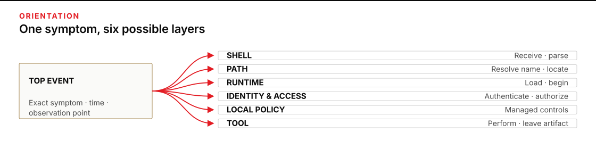
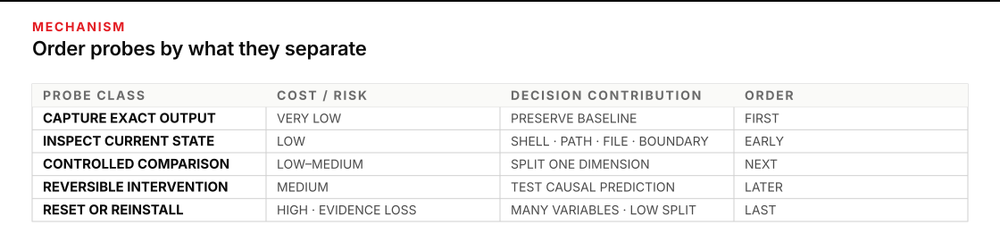
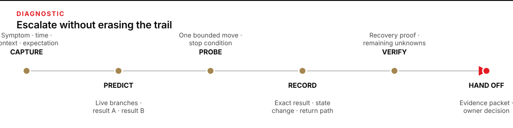

When the next move is not obvious
An install or smoke proof has failed, several explanations sound plausible, and each extra change risks hiding the original evidence. Set aside 45–60 minutes. You will leave with an annotated fault tree and a diagnostic record that another person can inspect without asking you to reconstruct the evening from memory.
Complete the Pre-work install recovery checks first; they establish the current commands, vendor paths, and recovery order. Continue when the unresolved task is to decide which layer can still explain the symptom, what observation would separate the live explanations, and when the evidence is strong enough to act or hand off.

Figure transcript
The top event is the exact observed failure. It forks to six diagnostic layers. Shell asks whether the intended interpreter received and parsed the input. Path asks whether name resolution selected the intended executable. Runtime asks whether that executable loaded and began. Identity and access separate authentication, which establishes identity, from authorization, which decides what that identity may do. Local policy asks whether a workstation or organization-managed control denied the action. Tool asks whether the started and permitted program performed the requested behavior and left the expected artifact. More than one branch may remain live, and evidence changes each branch’s status only for the top event under investigation.
Work backward from the symptom
A top event is the exact unwanted state you can observe. “The install is broken” is too broad. “The named smoke action returned a command-not-found message in a particular terminal at 19:10” is useful because another person can reproduce or refute it.
Formal fault-tree analysis begins with a specific undesired state and works backward through logically related contributing events. It distinguishes alternatives that can each cause the event (OR branches) from combinations that must occur together (AND branches). NASA describes this as deductive systems analysis: postulate the failed state, then build the more basic contributing faults systematically. The install fault tree borrows that discipline, but it is not a quantified safety analysis. Its job is to keep plausible workstation explanations visible until evidence removes them. See NASA’s Fault Tree Handbook with Aerospace Applications, Chapters 2–4.
Open six layer branches
Start with all six branches live. Do not choose a favorite from the wording of the error alone.
A name resolver is the shell’s lookup that turns a short command name into a particular file. A runtime is the supporting engine and dependencies that the selected program needs in order to start. You will meet both boundaries separately in the tree.
| Layer | Question the branch asks | Evidence that would move it |
|---|---|---|
| Shell | Did the intended command interpreter receive and parse the input? | Shell identity, prompt shape, parsing behavior, and the exact error text. |
| Path | Did the resolver select the intended executable or script? | The resolved location, search order, file presence, and differences between old and fresh processes. |
| Runtime | Could the selected program load what it needs and begin execution? | A startup boundary, dependency or compatibility message, and whether a harmless diagnostic mode begins. |
| Identity & access Authentication / authorization | Did the running program prove the intended identity, and did the service allow that identity to perform the request? | Proof that execution reached the service, the authentication result, the authorization result, and a secret-safe check of credential presence—not the secret itself. |
| Local policy | Did an operating-system or organization control on the workstation deny the attempted action? | A named control source, denial event, scope, owner, and whether the same action is allowed in a permitted context. |
| Tool | Did the started and authorized tool perform the requested behavior? | The expected artifact, process output, logs, exit state, and a repeatable minimal case. |
Authentication establishes who or what is presenting a credential. Authorization decides what that established identity may do. Both sit in the identity-and-access branch; local policy stays separate because it is enforced by the workstation or its organization-managed controls. NIST keeps the same distinction in its authentication and authorization glossary entries.
These branches are not a sequence of repairs. The root uses OR because any one layer can produce the observed failure. Use AND only when the system model says conditions must combine; uncertainty by itself is not a logic gate. More than one branch can be true: a stale search path may hide the intended executable, and the intended executable may later meet an identity or access fault. A verdict at one boundary should therefore say what it proves and what it does not.
Turn a guess into a hypothesis
A hypothesis is a possible cause paired with a prediction. Write it in this form: “If this branch explains the top event, then observation X should produce result Y; result Z would weaken it.” The prediction is what prevents a test from becoming another random action.
A probe is a bounded observation or experiment used to separate hypotheses. A probe is discriminating when its possible outcomes divide the live explanations. Before running one, fill in both predicted outcomes. If every live hypothesis predicts the same result, the probe may collect background information, but it will not choose the next branch.
Google’s troubleshooting method treats diagnosis as an iterative cycle of observations, hypotheses, and tests. It recommends tests whose outcomes separate groups of hypotheses, with likelihood and risk considered before active changes. It also warns that active tests can change later results. That is why passive observations come first and every intervention—a change made to the system—belongs in the record. See Effective Troubleshooting, especially “Theory” and “Test and Treat.”
Order probes by decision value, not habit
A probe earns its place by changing the next decision. Decision-theoretic troubleshooting formalizes this by comparing observations, repairs, and configuration changes through their expected costs. You do not need reliable probabilities to use the practical consequence: favor a low-disruption observation that divides the live branches before an expensive action that merely repeats the symptom. See Breese and Heckerman’s Decision-Theoretic Troubleshooting: A Framework for Repair and Experiment.
- Preserve first. Capture the exact symptom, time, working location, process age, and relevant non-secret state before changing anything.
- Prefer observation. Ask the current system what shell is running, what name it resolves, what file exists, or which boundary produced the error.
- Use a controlled comparison. Compare one meaningful dimension, such as an already-open process with a fresh one, while holding the target and requested action fixed.
- Make one reversible change. State what the change can distinguish, record the prior state, and define how to return.
- Reserve resets and reinstalls. They touch many variables at once, consume time, and can overwrite the evidence that would explain why the first attempt failed.
On Windows, this old-process versus fresh-process comparison has a concrete mechanism. A process receives an environment block when it starts, and child processes normally inherit their parent’s environment. The search path is the ordered set of directories used to locate executable files. A new persistent setting can therefore be correct while an already-running terminal still holds an older process copy. Microsoft documents these behaviors in about_Environment_Variables and the Windows path reference.

Figure transcript
Passive capture has very low disruption and preserves the baseline symptom, context, and timeline even when it does not separate hypotheses. State inspection has low disruption and can separate shell, path, file, process, and boundary questions. A controlled comparison has low to moderate disruption and separates one changed dimension from held-constant conditions. A reversible intervention has moderate disruption and tests a written causal prediction, but it must include a return path. A reset or reinstall has high disruption and high evidence loss because it changes many variables, so it comes last rather than first.
Workstation case: the successful install that cannot be named
Mara is preparing a fictional command-line tool called Northstar. The installer reported completion, but the smoke proof never began. Her top event is precise:
At 19:10 in Terminal A, entering the Northstar command returned “name not recognized”; no Northstar process began and no smoke artifact was created.
She records four facts before touching the machine:
- Terminal A was opened at 18:30, before the installer ran.
- The installer ended at 18:54 and wrote a completion record.
- The expected executable file exists in the location recorded by the installer.
- The current shell’s resolver cannot map the Northstar name to any file.
The deliberate misdiagnosis
Mara remembers a credential failure from another tool and writes “bad authentication” as the cause. She starts toward the credential settings. That diagnosis conflicts with the boundary evidence: authentication cannot reject a process that the shell never located or started. She stops before exposing or replacing a secret, marks the identity-and-access branch not reached, and records the aborted action. The recovery is not pretending the wrong turn did not happen; it is restoring a clean decision point.
She then makes a second wrong move on purpose for the exercise: she runs the installer again. The same terminal returns the same name-resolution symptom. This result weakens “installer did not place the file,” but the reinstall changed several unknowns and replaced part of the original timeline. She labels the second completion record intervention, no symptom change instead of treating it as fresh proof of health.
The discriminating path
Her live explanations are now narrower:
- Shell: possible but weak; the terminal identifies itself as the intended shell and parses ordinary built-in input.
- Path: live; the file exists but the current resolver does not find it.
- Runtime: not reached through the failed name, so still unknown.
- Identity and access, local policy, and tool behavior: not reached, so none can explain this specific top event yet.
The next probe compares Terminal A with a fresh terminal while keeping the machine, user, name, and harmless diagnostic request fixed. Mara predicts:
- If the executable or install record is genuinely absent, both terminals will fail to resolve it.
- If Terminal A holds an old process environment, the fresh terminal will resolve the intended location while Terminal A still will not.
- If both resolve the same file but startup fails, the investigation moves to runtime, local policy, or tool behavior.
The fresh terminal resolves the exact file recorded by the installer and begins the harmless diagnostic mode. Terminal A still does not resolve the name. That paired result is far more discriminating than another reinstall.
Her bounded verdict reads:
The command-not-found top event in Terminal A is explained by stale process search state. The file existed and a fresh process resolved and started it. This does not yet prove identity, access, or smoke-file creation; those remain subject to the current checklist proof.
Notice what stood after the misdiagnosis: the original error, both process start times, the resolver results, the installer record, and the outcome of each intervention. The case is useful to another person because it shows observations and state changes separately.

Figure transcript
First, capture the exact symptom, time, context, and expected behavior. Second, list live layer hypotheses and predict opposite outcomes. Third, run one bounded probe with a stop condition. Fourth, record the exact result and every state change without rewriting earlier entries. Fifth, verify recovery at the boundary actually tested and name remaining unknowns. Sixth, hand off the top event, evidence, probe log, bounded verdict, and requested owner decision. If a probe would expose secrets, change policy, risk work data, or exceed the operator's authority, the path moves directly to handoff.
Build the tree before you reveal the result
Plan 20–25 minutes. Use a blank page or notes file. The fictional workstation below gives you enough evidence to choose a probe without needing any product knowledge.
Supplied case: two copies of Atlas
The top event is: “At 20:05 in Terminal B, Atlas begins a diagnostic request, reports that its runtime host is unavailable, and leaves the designated output folder without an artifact.” You also know:
- The intended shell is confirmed and parses the request.
- The command resolver selects an Atlas executable in an old user-tools location.
- The latest installer record names a different application location.
- The old location still contains an earlier Atlas executable.
- No network or credential exchange appears before the runtime message.
- No operating-system or organization-policy denial is recorded.
Use four evidence statuses. LIVE means the branch still fits the observations. WEAKENED means evidence argues against it without removing it. SUPPORTED means a probe favors it as a contributor, not necessarily the only cause. NOT REACHED means the failure occurred before that boundary; it cannot explain this top event, but its own health remains unknown.
- Write the top event with expected behavior, actual behavior, time, and observation point.
- Draw the six layer branches. Mark each LIVE, WEAKENED, SUPPORTED, or NOT REACHED. Put one evidence item beside every mark.
- Write two competing hypotheses. Include the tempting runtime explanation and the path-selection explanation.
- For each hypothesis, predict what would happen if a harmless diagnostic mode were started from the exact location named in the latest installer record.
- List three possible probes. Rank them by disruption, time, evidence loss, and how cleanly their possible outcomes split the two hypotheses.
- Choose one probe and write the verdict you would be allowed to make after each possible result. Do this before opening the reveal.
Reveal the supplied result only after you predict it
The executable at the latest installer location begins its harmless diagnostic mode without the runtime-host error. The resolver still selects the older copy when only the short Atlas name is used.
The strongest bounded verdict is: short-name resolution selected the older copy; the exact latest copy does not reproduce the runtime-host error; and the broad claim “the current runtime is missing” is weakened. Why the old copy emits that error remains unknown. Identity and access, final tool behavior, and artifact creation remain unproved because the diagnostic stopped before those boundaries.
A defensible status update is: Shell—WEAKENED by the confirmed shell; Path—SUPPORTED as a contributor by the paired copy result; Runtime—LIVE but bounded to the old copy’s startup context; Identity & access—NOT REACHED; Local policy—WEAKENED because no denial is recorded; and Tool—NOT REACHED.
One defensible probe ranking is:
- Start the same harmless diagnostic from the exact latest location: low disruption and a clean split between copy selection and a shared runtime problem.
- If both copies fail, inspect their non-secret startup context and support-file lookup without changing either copy: very low disruption, but useful only after the first split.
- Reset or reinstall only through the current recovery owner: high disruption, many changed variables, and substantial evidence loss.
Make the work inspectable
Copy this record for your Atlas case, then keep it for one real pre-work failure. Never paste a credential value. Record the variable or credential name and whether a secret-safe presence check passed.
| Field | Your record |
|---|---|
| Case ID · local time · time zone | |
| Top event: expected / actual / observation point | |
| Impact and stop condition | |
| Context: machine, shell, process start time, working location, tool identifier | |
| Exact error or artifact absence | |
| Layer branches and status: LIVE / WEAKENED / SUPPORTED / NOT REACHED | |
| Probe prediction: result A means / result B means | |
| Probe run: time, observation or intervention, exact result | |
| State changed and return path | |
| Branches removed, surviving hypothesis, and remaining unknowns | |
| Recovery proof or escalation owner |
This is a diagnostic record, not a formal evidence record for legal use. The transferable discipline is still the same: record facts and actions, preserve integrity and provenance—where the evidence came from and what changed it—and keep sensitive records protected. NIST gives those requirements high priority for incident analysis in SP 800-61 Rev. 3, RS.AN-06 and RS.AN-07.
Self-check: predict, then reveal
- A name does not resolve, the intended file exists, and starting that exact file reaches its diagnostic mode. Which branch best explains the top event? What remains unproved?
- A program starts and reaches a remote service. The service recognizes its identity but denies the requested action. Which access check produced the result, and would reinstalling the local program discriminate?
- Two live hypotheses predict the same result from a proposed probe. What should you change before running it?
- An active test would require an administrator policy change and could affect work applications. Is that still your next probe?
Reveal the self-check
- Path or name resolution is strongest. Runtime, identity and access, local policy, and final tool behavior are known only up to the boundary actually reached.
- Authorization produced the result: identity was established, but the action was not allowed. No, reinstalling would not discriminate; the program was already found, started, and authenticated.
- Write a different observation whose possible outcomes divide the hypotheses. If you cannot, combine or refine the hypotheses rather than pretending the test is decisive.
- No. Preserve the record and return the policy decision to its owner. A low-cost probe becomes high-cost when its required authority or scope of possible harm grows.
Carry the tree to your desk
Use the next harmless workstation failure you meet, or reconstruct one from your setup log. Give yourself 15 minutes. Write the top event, open the six branches, and run only one probe whose predictions you wrote first. Attach the exact result to the record and make a bounded verdict: supported cause, weakened causes, and what you did not reach.
Keep the boundary small. Do not use a production system, work data, real secret values, or a policy change for this transfer. Return to a human owner when the next move crosses administrator authority, security policy, account ownership, or a destructive reset. If the issue belongs to the course workstation, take your evidence packet back to the current install recovery checks rather than improvising a repair from this page.
Sources
- NASA · Fault Tree Handbook with Aerospace Applications — deductive top-event analysis and logical branch construction.
- U.S. Nuclear Regulatory Commission · Fault Tree Handbook (NUREG-0492) — authoritative fault-tree construction reference.
- Google SRE · Effective Troubleshooting — hypothesis testing, discriminating experiments, risk, and clear notes.
- Microsoft Research · Decision-Theoretic Troubleshooting — observations and repairs ordered by expected decision cost.
- Microsoft Learn · Environment variables and the Windows path reference — process inheritance and executable search behavior.
- NIST CSRC glossary · Authentication and Authorization — identity verification versus permission to act.
- NIST SP 800-61 Rev. 3 — recording actions and preserving evidence integrity and provenance.